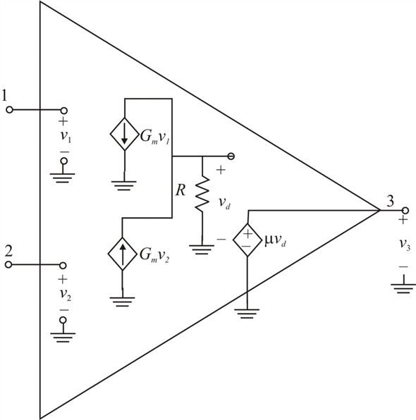

Step 1:
Draw the internal circuit of operational amplifier.

Step 2:
The output voltage of non-ideal operational amplifiers response to both the differential and common-mode components of their input signals, which can be written as,
…… (1)
Here,
 is the differential gain and
is the differential gain and
 is the common-mode gain.
is the common-mode gain.
The operational amplifier’s effectiveness in rejecting common mode signals is measured by its CMRR. Mathematically, it can be written as,
Write the expressions of the transconductance of the two channels.
Step 3:
Write the expression for input to the two channels.
Here,
is the common-mode input signal
is the differential input signal.
Consider the following expressions for input currents.
Step 4:
The current in the resistor  is,
is,
The voltage across the resistor  is,
is,
From the circuit, the output voltage is,
Substitute the values of and in the expression of  .
.
From the circuit diagram, the voltage  is nothing but output voltage. So, replace
is nothing but output voltage. So, replace  with
with  . Therefore,
. Therefore,
…… (2)
Step 5:
Compare equation (2) with equation (1).
Therefore, the expression for differential gain,  is and the expression for common mode gain,
is and the expression for common mode gain,  is .
is .
Step 6:
Calculate the common-mode rejection ratio (CMRR).
Therefore, the expression for  of the operational amplifier is .
of the operational amplifier is .
Step 7:
The value of differential gain,  in dB is,
in dB is,
Calculate the value of  .
.
The ratio of two transconductances is,
Step 8:
Consider the following ratio.
Substitute for  .
.
Therefore, the value of common-mode gain,  is .
is .
Step 9:
Calculate the value of  .
.
Therefore, the value of for the operational amplifier is .